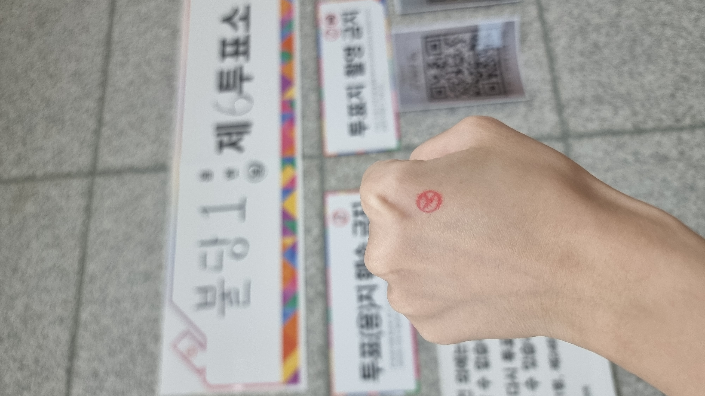

한국 사람들은 어떻게 투표할까요? 손등에 찍힌 빨간 도장의 의미부터 선거의 종류까지. How do Koreans vote? From the red stamp on the hand to the types of elections.
2026. 6. 3. (수)
제9회 전국동시지방선거 · The 9th Local Elections
2026년 6월 3일, 한국에서 지방선거가 있었어요. 전국에서 동시에 시·도지사, 시장·군수, 지방의회 의원, 교육감을 뽑았어요. 같은 날 국회의원을 다시 뽑는 재보궐선거도 함께 열렸어요.
On June 3, 2026, Korea held local elections nationwide — choosing governors, mayors, local council members, and education superintendents. By-elections for the National Assembly were held the same day.
① 한국의 선거 종류 Three (+1) kinds of elections
한국에는 크게 세 가지 큰 선거가 있어요. 대통령은 5년마다, 국회의원과 지방선거는 4년마다 열려요. Korea has three major elections: president every 5 years, the others every 4 years.
대선 (대통령 선거)
5년마다 · every 5 yrs
대통령을 뽑아요. Presidential election.
총선 (국회의원 선거)
4년마다 · every 4 yrs
국회의원을 뽑아요. General (National Assembly) election.
지선 (지방선거)
4년마다 · every 4 yrs
지역의 시장·도지사·의원을 뽑아요. ← 이번 선거! Local election (this one!).
재보궐선거
필요할 때 · as needed
빈자리가 생기면 다시 뽑아요. By-election to fill vacant seats.
💡 줄임말 Tip — 한국 뉴스에서는 줄여서 말해요. 대선(대통령선거), 총선(국회의원 총선거), 지선(지방선거). 신문 제목에 자주 나와요! Korean news shortens these: 대선 / 총선 / 지선.
② 지방선거에서 누구를 뽑을까요? Who gets elected in a local election?
직책 Position
설명 Description
광역단체장 metropolitan / provincial leader
시·도지사 (서울시장, 경기도지사 등)city/province governor
기초단체장 municipal leader
시장·군수·구청장mayor / county or district head
지방의회 의원 council members
광역의원 + 기초의원provincial + local council members
교육감 superintendent of education
지역 교육을 책임지는 사람head of regional education
③ 투표하는 날, 무슨 일이 있을까요? What happens on voting day?
투표소에 가요
Go to the polling station (투표소). 만 18세 이상이면 투표할 수 있어요. / Anyone 18+ can vote.
신분증을 보여줘요
Show your ID (신분증) and get your ballot.
투표용지를 받아요
Receive the ballot paper (투표용지).
기표소에서 도장을 찍어요
In the booth, stamp your choice. The special mark is 卜 (점 복). / The stamp leaves a 卜 mark.
투표함에 넣어요
Drop it in the ballot box (투표함). Done!
🖐️ 손등의 빨간 도장 = 인증샷 문화!
투표소 안에서는 투표지를 사진 찍으면 안 돼요 (투표지 촬영 금지). 그래서 기표소에서 투표지에 도장을 찍은 다음, 마지막으로 손등에 도장을 살짝 찍어요. 그리고 투표소 밖으로 나와서 사진을 찍는 게 바로 "투표 인증샷"이에요! You can't photograph your ballot (투표지 촬영 금지). So after marking your ballot in the booth, you lightly stamp the mark on the back of your hand — then step outside the polling station to take your "voting proof shot" (인증샷). The 卜 mark is asymmetric, so it can't be faked.

투표 인증샷 · My voting proof shot 🗳️
사전투표 vs 본투표 Early voting vs Election day
사전투표 — 선거일 전에 미리 투표해요. 전국 어디서나 가능! Early voting: vote before election day, at any station nationwide.
본투표 — 선거일 당일, 정해진 투표소에서 투표해요. Main voting: on election day, at your assigned station.
④ 의미망: '선거' 단어 지도 Semantic network: words around 선거
하나의 주제 단어에서 관련 단어들이 가지처럼 뻗어 나가요. 따로 외우지 말고 연결해서 기억해요. Learn words in connected clusters, not in isolation.
투표 (投票)
vote / voting
후보(자) (候補)
candidate
유권자 (有權者)
eligible voter
공약 (公約)
campaign pledge
개표 (開票)
vote counting
출구조사 (出口調査)
exit poll
당선 (當選)
winning election
투표율 (投票率)
voter turnout
인증샷
proof photo (인증+shot)
🅾️ 미니 퀴즈 · Mini Quiz
1. 2026년 6월 3일에 한국에서 무슨 선거가 있었어요? What election was held on June 3, 2026?
정답 보기
지방선거 (제9회 전국동시지방선거) — 시장, 도지사, 지방의원, 교육감을 뽑았어요.
2. 투표소에서 사진 찍으면 안 되는 것은 무엇일까요? What can't you photograph?
정답 보기
투표지(투표용지) — 그래서 투표소에서 주는 인증 도장을 손등에 찍고 인증샷을 찍어요!
3. "대선 / 총선 / 지선"은 각각 무슨 선거의 줄임말일까요? What do these abbreviations mean?
정답 보기
대선 = 대통령 선거 / 총선 = 국회의원 총선거 / 지선 = 지방선거
🎤 이야기해 봐요 · Let's talk
여러분 나라에서는 몇 살부터 투표할 수 있어요? From what age can you vote in your country?
여러분 나라에도 "투표 인증샷" 문화가 있어요? Is there a "voting proof shot" culture where you live?
선거에서 가장 중요한 것은 무엇이라고 생각해요? What do you think matters most in an election?